).
).
Лекция посвящена методам группировки, комбинирования и изменения формы для построения контура сложной фигуры из простых объектов. Также в лекции рассмотрены обратные процессы.

Любое графическое изображение представляет собой набор отдельных элементов, которые, располагаясь на рабочей области в соответствующем порядке на определенных местах, формируют законченную цельную картинку. Применение действий по группировке, комбинированию и формированию дает возможность связать отдельные элементы сложного изображения между собой, чтобы в последующем можно было производить перемещение, вращение и трансформирование сложного объекта как единого целого. По внешнему виду сложных объектов трудно увидеть результат применения того или иного действия (рис. 8.1), однако структурно эти объекты могут существенно отличаться друг от друга.
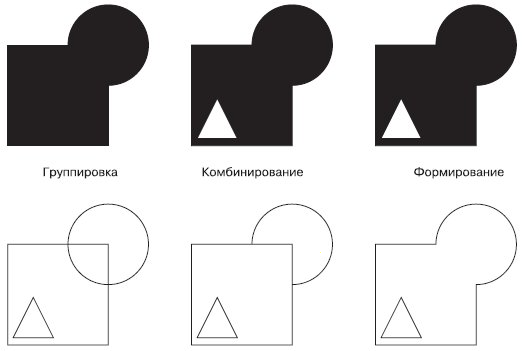
Рис. 8.1 Пример сложных объектов, схожих внешне (вверху), но различных по структуре (внизу)
В большинстве случаев действия группировки, комбинирования и формирования являются обратимыми. Это значит, что существует возможность восстановления или извлечения исходных объектов, участвовавших в создании сложного графического изображения.
Полностью обратимой является группировка. Обратное действие — разгруппировка — снимает связывание и открывает доступ к отдельным объектам и их первоначальным параметрам (рис. 8.2).
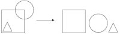
Рис. 8.2 Пример разгруппировки сложного графического изображения, созданного в результате группировки
Частично обратимым можно назвать комбинирование объектов. Обратное действие — разделение на части — позволяет снять связывание и открывает доступ к отдельным объектам (рис. 8.3). Это действие не позволяет вернуть объектам исходные параметры, которыми они обладали при построении, однако вы можете использовать узлы и сегменты кривых Безье для редактирования формы объектов.
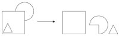
Рис. 8.3 Пример разделения на части сложного графического изображения, созданного в результате комбинирования
Частично обратимым или полностью необратимым является формирование объектов. Разделение на части или извлечение фрагмента позволяет лишь частично восстановить некоторые объекты, участвовавшие в формировании сложного графического изображения (рис. 8.4). Однако, как и в случае с объектами, созданными в результате комбинирования, всегда остается возможность использовать узлы и сегменты кривых Безье для редактирования формы объектов.
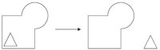
Рис. 8.4 Пример разделения на части сложного графического изображения, созданного в результате формирования
Таким образом, использование того или иного действия по связыванию отдельных фрагментов в одно сложное изображение определяется характеристиками, которыми должно обладать конечное изображение.
Результатом группировки объектов является группа — набор объектов, представляющих собой единое целое при выполнении действий, связанных с перемещением, трансформированием, вращением и изменением некоторых свойств контуров и заливок. Действия, выполняемые над группой, одинаково относятся к каждому отдельному объекту группы (рис. 8.5).
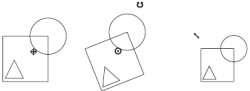
Рис. 8.5 Пример перемещения, вращения и масштабирования группы объектов
Возможно создание вложенных групп, когда сгруппированные объекты являются частью другой группы.
Чтобы сгруппировать объекты, необходимо выполнить следующие действия.
Выделить объекты.
Выполнить команду меню Arrange - Group (Расположение - Группировать) или нажать соответствующую кнопку на панели свойств (рис. 8.6)
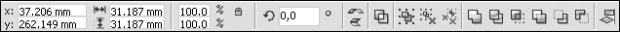
Рис. 8.6 Расположение кнопки Group (Группировать) на панели свойств
Отдельные объекты, входящие в состав группы, можно редактировать и удалять из группы.
Чтобы выделить отдельный объект, щелкните на требуемом объекте, входящем в состав группы, удерживая нажатой клавишу Ctrl.
В результате вокруг объекта появится невидимая габаритная рамка (selection box), обозначаемая восемью управляющими маркерами (кружочки в углах и на центрах сторон) и центром габаритной рамки в виде крестика (рис. 8.7).
Чтобы разгруппировать объекты, входящие в состав группы, необходимо выполнить следующие действия.
Выделить объекты.
Выполнить комнаду меню Arrange - Ungroup (Расположение - Разгруппировать).
Щелкнуть на свободной части рабочей области, чтобы снять выделение с разгруппированных объектов.
После того как объекты разгруппированы, их можно выбирать по отдельности и производить требуемые редакторские изменения.
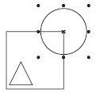
Рис. 8.7 Выделенный объект, входящий в состав группы
Объекты, участвующие в комбинировании, превращаются в кривые Безье. Результат комбинирования принимает параметры контура и заливки последнего выделенного объекта. Внешний вид итогового объекта, полученного в результате комбинирования (рис. 8.8), определяется по следующим принципам:
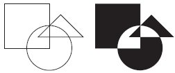
Рис. 8.8 Исходные объекты (слева) и результат, полученный в результате комбинирования (справа)
участки, на которых количество пересекающихся объектов нечетное, закрашиваются;
участки, на которых количество пересекающихся объектов четное, становятся прозрачными.
Редактировать внешний вид полученного объекта можно на уровне узлов и сегментов, с помощью инструмента Shape (Форма) ().
Чтобы применить комбинирование, необходимо выделить требуемые объекты и выполнить команду меню Arrange - Combine (Расположение - Комбинировать) или нажать соответствующую кнопку на панели свойств (рис. 8.9).

Рис. 8.9 Расположение кнопки Combine (Комбинировать) на панели свойств
Поскольку при комбинировании объекты превращаются в кривые Безье, то при разбитии кривой на части с объектов снимается связывание и открывается доступ к узлам и сегментам кривых Безье отдельных объектов.
Чтобы разбить кривую на части, необходимо выполнить такие действия.
Выделить объекты.
Выполнить команду меню Arrange - Break Curve Apart (Расположение - Разбить кривую на части).
Щелкнуть кнопкой мыши на свободной части рабочей области, чтобы снять выделение с разгруппированных объектов.
После того как объекты разгруппированы, их можно выбирать по отдельности и редактировать.

ВНИМАНИЕ. Текстовые символы представляют собой объекты, созданные в результате комбинирования отдельных частей (рис. 8.10).
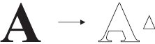
Рис. 8.10 Символ "A", превращенный в кривую и разбитый на части
Формирование объектов основано на логических операциях объединения (сложения), исключения (вычитания) и пересечения, которые в данном случае выполняются над областями взаимодействующих объектов (рис. 8.11).
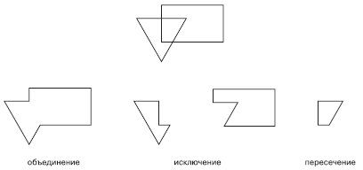
Рис. 8.11 Исходные объекты (вверху) и результаты выполнения над ними логических операций (внизу)
Результатом формирования объектов является кривая Безье, форму которой можно редактировать с помощью работы с узлами и сегментами. Для формирования новых объектов в логических операциях должно участвовать два или более исходных.
Операция объединения объектов (Weld) основана на логической операции "сложение". В результате объединения внутренние границы пересекающихся участков объектов исчезают, и остается лишь контур итоговой фигуры, представляющий собой кривую Безье (рис. 8.12).

Рис. 8.12 Пример объединения объектов
Впоследствии изменить внешний вид полученного объекта можно на уровне узлов и сегментов, с помощью инструмента Shape (Форма) ().
Чтобы объединить объекты, необходимо выделить их и выполнить команду меню Arrange - Shaping - Weld (Расположение - Изменение формы - Объединить). Кроме того, можно воспользоваться кнопкой Weld (Объединить), расположенной на панели инструментов (рис. 8.13).

Рис. 8.13 Расположение кнопки Weld (Объединить) на панели свойств
Операция исключения объектов (Trim) основана на логической операции "вычитание". Результатом исключения является объект, у которого пересекающиеся участки удаляются. Объекты,участвующие в обрезке, можно условно разделить на "объекты-ножи"" и "объекты-жертвы". "Объект-нож" "съедает" из "объект-жертвы" участок, на который он накладывается (рис. 8.14).
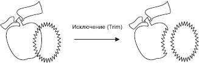
Рис. 8.14 Пример обрезки объекта
Перед выполнением исключения необходимо определить, какой объект будет выступать в качестве "ножа", а какой — в качестве "жертвы". Поскольку при построении объектов каждый новый объект располагается в иерархической структуре выше построенного ранее, то существует возможность выбора вариантов исключения. Кроме неопсредственно команды Trim (Исключение), существуют следующие команды (рис. 8.15):
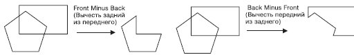
Рис. 8.15 Результаты исключения объектов (прямоугольник находится на заднем плане)
Front Minus Back (Вычесть задний из переднего);
Back Minus Front (Вычесть передний из заднего).
Впоследствии внешний вид полученного объекта можно изменить на уровне узлов и сегментов, с помощью инструмента Shape (Форма) ().
Чтобы произвести обрезку объектов, необходимо выделить их и выполнить команду Arrange - Shaping - Front Minus Back (Расположение - Изменение формы - Вычесть задний из переднего) или Arrange - Shaping - Back Minus Front (Расположение - Изменение формы - Вычесть передний из заднего). Кроме того, можно воспользоваться соответствующими кнопками на панели свойств (рис. 8.16).

Рис. 8.16 Расположение кнопок Front Minus Back (Вычесть задний из переднего) и Back Minus Front (Вычесть передний из заднего) на панели свойств
Операция пересечения (Intersect) приводит к созданию фигуры из пересекающихся участков двух или более объектов (рис. 8.17).
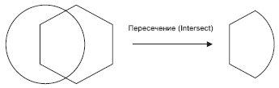
Рис. 8.17 Результат пересечения объектов
Итоговая фигура представляет собой кривую Безье. Впоследствии ее внешний вид можно изменить на уровне узлов и сегментов, с помощью инструмента Shape (Форма) ().
Чтобы выполнить пересечение объектов, необходимо выделить их, после чего выполнить команду меню Arrange - Shaping - Intersect (Расположение - Изменение формы - Пересечение). Можно также использовать кнопку Intersect (Пересечение), которая появляется на панели свойств после выделения объектов (рис. 8.18).
Рис. 8.18 Расположение кнопки Intersect (Пересечение) на панели свойств
ВНИМАНИЕ. В результате пересечения кроме итоговой фигуры на странице остаются и исходные объекты. Если эти объекты не нужны, их необходимо удалить, чтобы осталась только необходимая фигура (рис. 8.19).
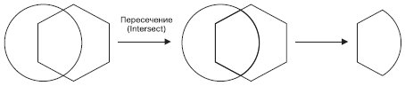
Рис. 8.19 Результат пересечения
После выполнения некоторых команд меню Arrange - Shaping (Расположение - Изменение формы объектов) на экране отображается только итоговая фигура. Однако очень часто необходимо, чтобы оставались также исходные объекты. В таких случаях удобно использовать пристыковываемое окно Shaping (Изменение формы) (рис. 8.20)
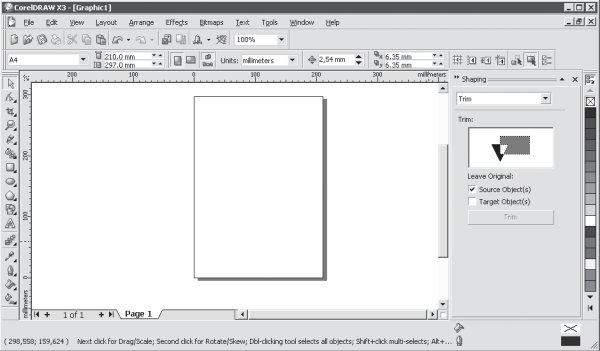
Рис. 8.20 Пристыковываемое окно Shaping (Изменение формы)
Чтобы открыть данное пристыковываемое окно, необходимо выполнить команду меню Arrange - Shaping - Shaping (Расположение - Изменение формы - Изменение формы).
Вариант изменения формы выбирают из раскрывающегося списка (рис. 8.21).
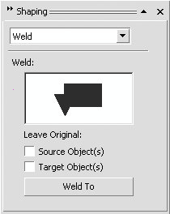
Рис. 8.21 Раскрывающийся список с вариантами изменения формы
При выборе в данном списке пункта Weld (Объединить), Trim (Исключение) или Intersect (Пересечение) внизу пристыковываемого окна отображается область Leave Original (Оставить исходные):
Source Object(s) (Исходные объекты);
Target Object(s) (Целевые объекты).
Объекты, участвующие в данном процессе, делятся на исходные и целевые. Целевой, итоговый объект выбирают в последнюю очередь, а все остальные объекты, которые выбираются в первую очередь, являются исходными. Установка соответствующих флажков позволяет получить не только результирующую фигуру, но и оставить те объекты, которые участвовали в изменении формы.
Рассмотренные в данной лекции методы группировки, комбинирования и изменения формы можно использовать для построения контура сложной фигуры из простых объектов.
В большинстве случаев операции, основанные на логическом исключении (вычитании), являются единственным способом создания сложных фигур, имеющих полости (просветы) внутри.